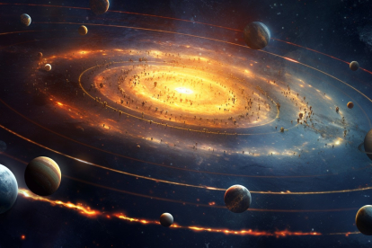
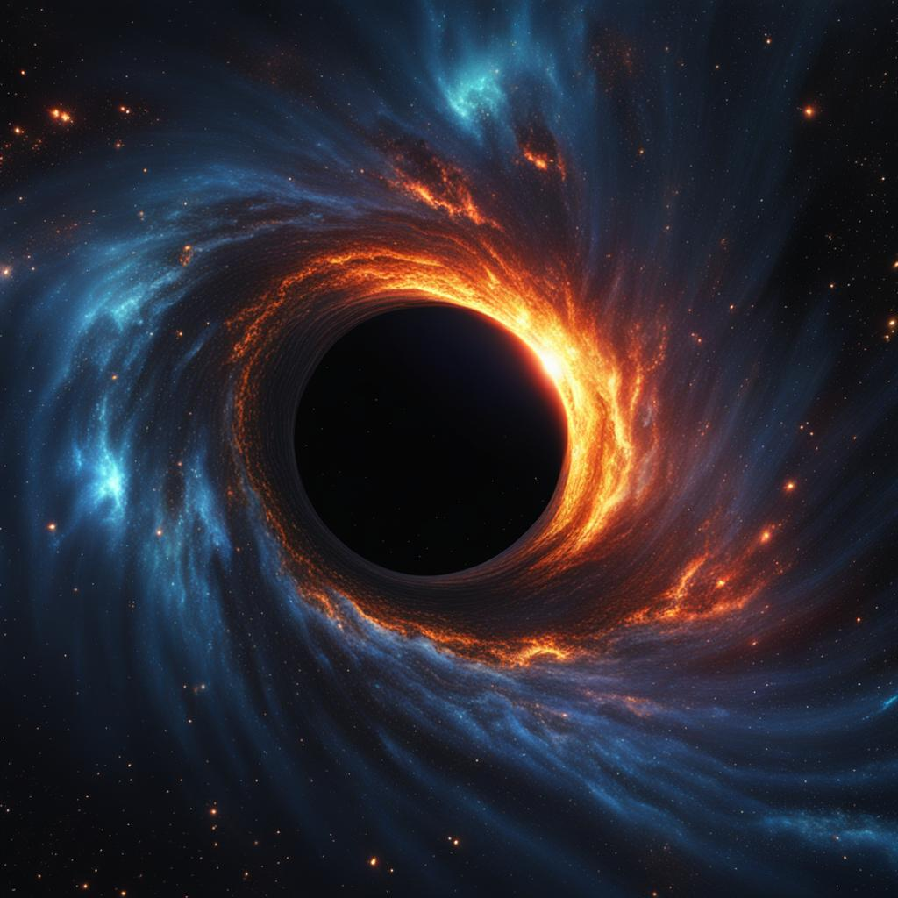
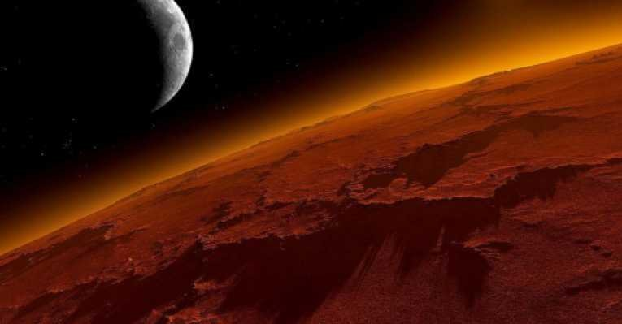
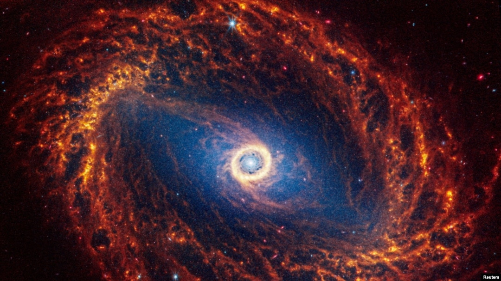
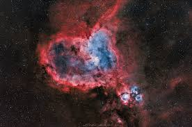
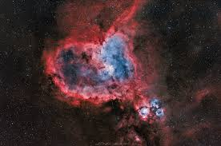
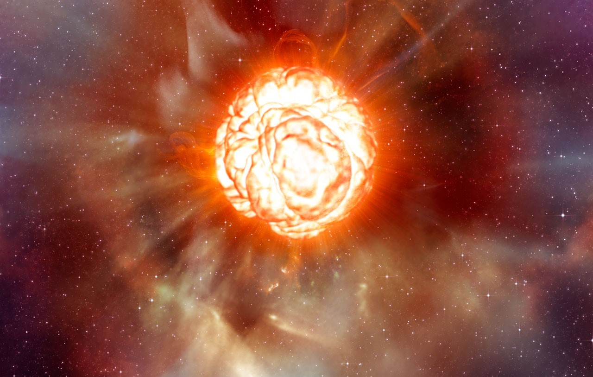
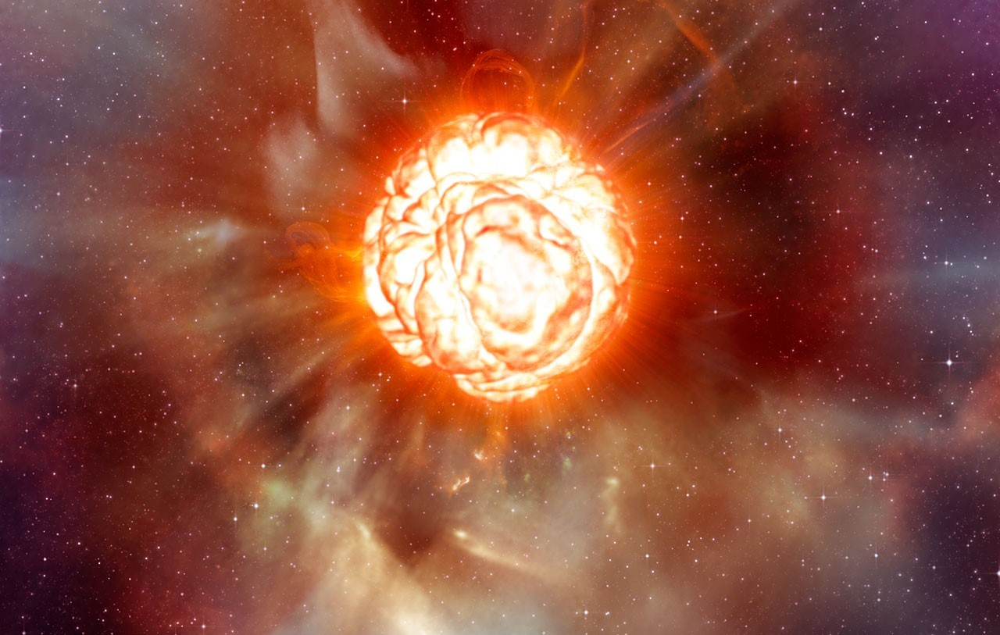

El Espacio: Introducción
El espacio, o el cosmos, es el vasto y casi vacío continente que se extiende más allá de nuestra
atmósfera. Está lleno de maravillas inimaginables, desde la inmensidad de las galaxias hasta los
misterios de los agujeros negros. La astronomía es la ciencia que estudia los cuerpos celestes y los
fenómenos que ocurren fuera de la atmósfera terrestre, y ha revelado que el universo es mucho más grande
y complejo de lo que alguna vez imaginamos.
En el espacio también encontramos otras formas de energía, como la radiación cósmica de fondo, que es el
remanente del Big Bang, y las partículas subatómicas que viajan a velocidades increíbles. La expansión
del universo, impulsada por la energía oscura, está haciendo que las galaxias se alejen unas de otras a
un ritmo cada vez más acelerado.
La Vía Láctea: Nuestro Hogar Galáctico
La Vía Láctea es la galaxia que alberga nuestro sistema solar. Es una galaxia espiral que contiene
aproximadamente 100 mil millones de estrellas. Nuestro sol es una de esas estrellas y se encuentra en
uno de los brazos espirales de la galaxia. La Vía Láctea tiene un diámetro de unos 100,000 años luz y
una masa estimada de 1.5 billones de veces la masa del sol.

La imagen muestra una vista de la Vía Láctea desde la Tierra. Las áreas brillantes en el centro
representan el núcleo galáctico, mientras que las regiones más oscuras están llenas de polvo
interestelar.
A pesar de su tamaño colosal, solo podemos observar una pequeña parte de la Vía Láctea desde la Tierra
debido a la enorme cantidad de polvo interestelar que bloquea la luz de muchas estrellas. Además, se
estima que más del 90% de la materia en la galaxia es materia oscura, una sustancia misteriosa que no
emite luz ni energía, pero cuya presencia se infiere a través de su influencia gravitacional en la
materia visible.
Agujeros Negros: Las Bestias Cósmicas
Los agujeros negros son regiones del espacio donde la gravedad es tan intensa que nada puede escapar de
ellos, ni siquiera la luz. Se forman cuando una estrella masiva agota su combustible y colapsa bajo su
propia gravedad. Los agujeros negros pueden ser de varios tipos, incluidos los agujeros negros
estelares, los agujeros negros de masa intermedia y los agujeros negros supermasivos que se encuentran
en el centro de las galaxias.

En esta imagen, podemos ver una simulación de un agujero negro y su disco de acreción, donde el material
se acumula antes de ser absorbido por el agujero negro.
El horizonte de eventos de un agujero negro es el límite más allá del cual ninguna información, ni
siquiera la luz, puede escapar. Los agujeros negros supermasivos, que tienen millones o miles de
millones de veces la masa del sol, están ubicados en el centro de muchas galaxias, incluida la nuestra.
Estos colosos son fundamentales para el crecimiento y evolución de las galaxias, ya que regulan la
formación estelar a través de sus potentes emisiones de energía.
Exploración Espacial: Desde el Apolo hasta Marte
Desde el primer vuelo espacial de Yuri Gagarin hasta las misiones actuales a Marte, la exploración
espacial ha avanzado significativamente. Las misiones Apolo llevaron a los primeros humanos a la Luna,
mientras que las sondas espaciales han explorado los planetas exteriores y más allá. La exploración
espacial sigue siendo una de las fronteras más emocionantes de la ciencia y la tecnología.

La misión Apolo 11 fue la primera en llevar a humanos a la superficie lunar en 1969. La imagen muestra el
módulo lunar en la superficie de la Luna, con el astronauta Neil Armstrong haciendo su famoso "gran
salto para la humanidad".
En los últimos años, las misiones no tripuladas como las de los rovers Curiosity y Perseverance han
estado explorando la superficie de Marte, buscando señales de vida pasada y preparando el camino para
futuras misiones tripuladas. Además, el desarrollo de cohetes reutilizables ha reducido enormemente los
costos de acceso al espacio, lo que ha abierto nuevas posibilidades para la exploración y la
comercialización del espacio.
Las Galaxias: La Estructura del Universo
Las galaxias son enormes agrupaciones de estrellas, gas, polvo y materia oscura que se mantienen unidas
por la gravedad. Existen diferentes tipos de galaxias, incluidas las espirales, elípticas e irregulares.
Cada galaxia puede contener desde cientos de millones hasta billones de estrellas.

La Galaxia de Andrómeda es una de las galaxias más cercanas a la Vía Láctea y se espera que colisione con
nuestra galaxia dentro de aproximadamente 4.5 mil millones de años. La imagen muestra una vista de esta
impresionante galaxia espiral.
Además de las galaxias individuales, el universo está estructurado en cúmulos y supercúmulos de galaxias,
conectados por filamentos de materia oscura. Estos forman una vasta red cósmica que define la forma del
universo en gran escala. La gravedad que une estas estructuras también es responsable de la interacción
entre galaxias, como la futura colisión entre la Vía Láctea y Andrómeda, que dará lugar a una nueva
galaxia elíptica en miles de millones de años.
La Energía Oscura y la Expansión del Universo
Uno de los descubrimientos más impactantes de la astronomía moderna es que el universo no solo se está
expandiendo, sino que esta expansión se está acelerando. Este fenómeno es impulsado por una misteriosa
fuerza conocida como energía oscura, que representa aproximadamente el 70% del contenido energético del
universo. Aunque su naturaleza exacta es desconocida, se cree que la energía oscura actúa en contra de
la gravedad, separando las galaxias a un ritmo cada vez mayor.
Este descubrimiento ha cambiado radicalmente nuestra comprensión del destino final del universo. Si la
expansión continúa acelerándose, eventualmente las galaxias se alejarán tanto unas de otras que el cielo
nocturno aparecerá completamente oscuro, con las estrellas más allá de nuestro alcance visual. Este
"Gran Congelamiento" podría ser el destino final del universo, en el que toda la energía estará tan
dispersa que no podrá ser utilizada para formar nuevas estructuras.
Los Exoplanetas: Mundos más allá del Sistema Solar
Un exoplaneta es un planeta que orbita una estrella fuera de nuestro sistema solar. Hasta la fecha, los
astrónomos han detectado miles de exoplanetas utilizando diversas técnicas como el tránsito y la
velocidad radial. Estos planetas varían en tamaño, composición y distancia de sus estrellas anfitrionas,
y algunos podrían ser capaces de albergar vida en condiciones similares a las de la Tierra.
La búsqueda de exoplanetas habitables es una de las áreas más emocionantes de la astronomía moderna. Con
la ayuda de telescopios avanzados como el Telescopio Espacial James Webb, los científicos esperan
detectar signos de vida extraterrestre a través del análisis de las atmósferas de estos mundos lejanos.
Este campo de estudio no solo podría responder a una de las preguntas más antiguas de la humanidad, sino
también abrir una nueva era en la exploración espacial.
 



 
